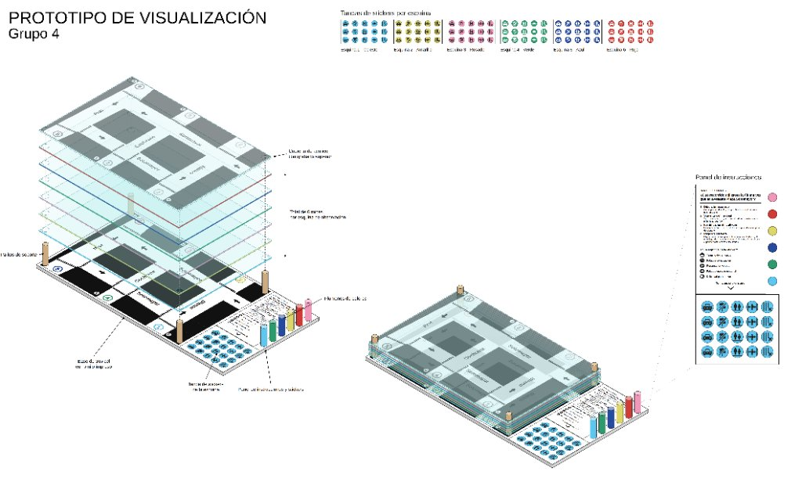
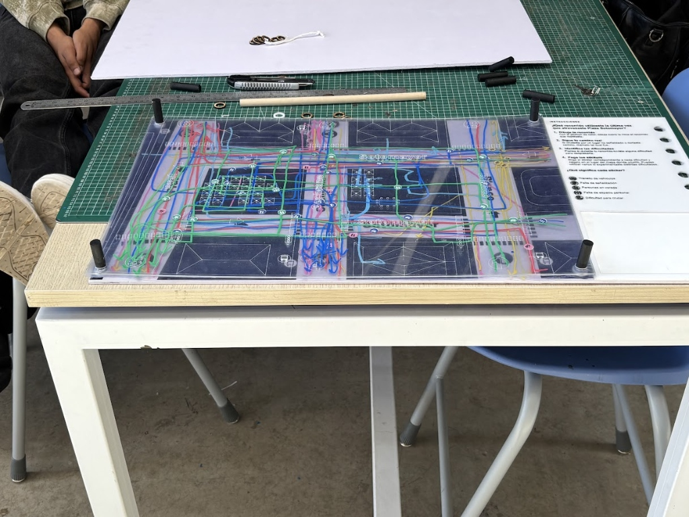
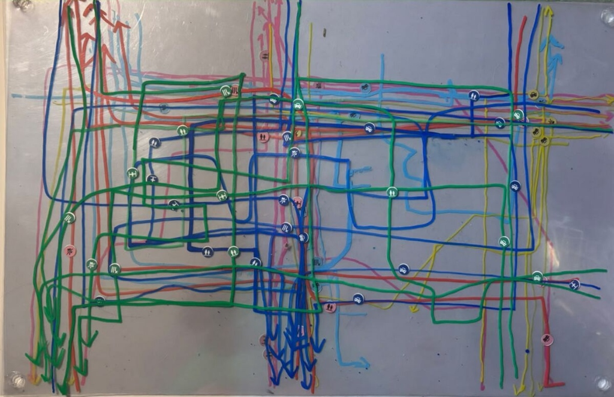
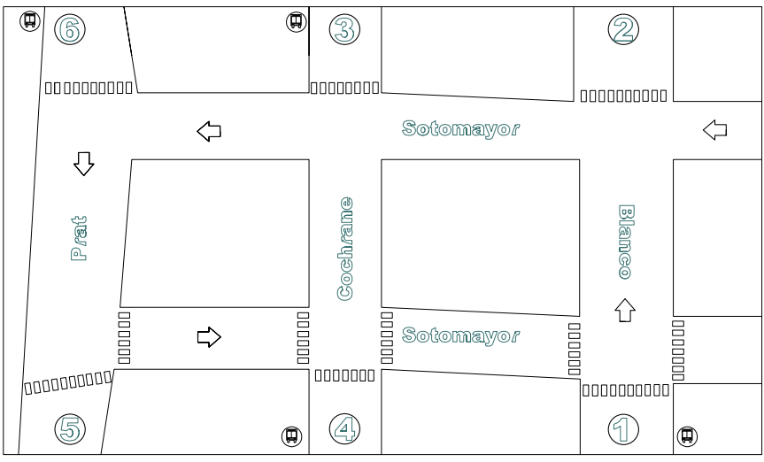

Del Espacio Público al Registro Multicapa
La Plaza Sotomayor concentra actividades cívicas, turísticas, portuarias y de transporte intermodal. Nuestro artefacto físico traduce la experiencia de atravesar sus 6 esquinas mediante láminas de mica superpuestas y 5 pictogramas de fricción urbana.
Convergencia de Funciones
Concentra simultáneamente instituciones públicas y Armada, turismo (Monumento a los Héroes de Iquique, Muelle Prat), transporte (Estación Puerto, paraderos de buses) y comercio, provocando un choque constante de ritmos.
Escala Monumental vs. Humana
La gran explanada central genera una escala abierta que contrasta fuertemente con la estrechez de las veredas y umbrales comerciales de los bordes, forzando distintas maneras de habitar y cortar camino por el vacío.
Nodo de Fricción Modal
Punto de alta tensión donde el tránsito peatonal intensivo se intersecta con el flujo vehicular (9 a 16 veh/min) y micros (hasta 1,8 buses/min), generando pausas obligadas, esquives y hasta 56% de cruces fuera de paso habilitado.
6 Esquinas = 6 Capas de Color
Interceptamos a los transeúntes en cada una de las 6 esquinas. Cada esquina tiene su propia lámina de mica transparente y un color asignado:
Stickers con Pictogramas Propios
Sobre su recorrido trazado, cada persona adhiere stickers circulares en el punto exacto del mapa donde experimentó una dificultad (haz clic en cualquiera para filtrarlo en el tablero):
Arquitectura Multicapa
Base de trovicel con mapa base, 6 láminas de mica perforadas en 4 soportes, cubierta de acrílico grabada al tacto y panel de instrucciones lateral.

Ampliar plano
Ver tablero realTablero Interactivo de Flujos y Fricciones
Explora las 6 láminas de mica de forma conjunta o esquina por esquina, filtra por tipo de dificultad, alterna entre las 4 formas de visualización inferiores y usa el Modo Autor para digitalizar nuevos recorridos y stickers en tiempo real.


Esquina 1
¿Qué recorrido utilizaste la última vez que atravesaste Plaza Sotomayor?
-
1.
Dibuja tu recorrido: Con el color de tu esquina, dibuja sobre la mica el recorrido que realizaste.
-
2.
Sigue tu camino real: Si cruzaste por un lugar no señalizado o cortaste camino, márcalo tal cual fue.
-
3.
Identifica las dificultades: Piensa si durante tu recorrido tuviste alguna dificultad para desplazarte.
-
4.
Pega los stickers: Elige el sticker correspondiente a cada dificultad y pégalo en el lugar del mapa donde ocurrió.
¿Qué significa cada sticker?
Esquina 1 (Celeste) • Personas en vereda
Haz clic sobre cualquier trazo o sticker en el mapa para inspeccionar su registro.
Despiece Isométrico 3D de las 6 Láminas de Mica
Observa cómo la base de trovicel inferior, las 6 micas individuales por esquina y la cubierta de acrílico superior grabada se apilan sobre los 4 soportes para construir la visualización colectiva.
Las 6 Láminas de Mica Individuales y su Superposición
Concentración de Recorridos y Stickers por Esquina
Desglose por Tipo de Sticker en Placa
10 Salidas de 10 Minutos por Esquina (E1–E6)
Consolidado conectado en tiempo real con nuestras 4 planillas de observación sistemática: Desplazamientos Peatonales, Transporte Público (micros y espera en paradero) y Tránsito Vehicular / Cruces Formales vs. Informales.
Flujo Peatonal vs. Tasa de Pausa
E1 (26,5/min) y E2 (26,4/min) lideran el flujo total, pero la pausa oscila solo entre el 5,1% y 11,1%, concentrada en paraderos y bordes comerciales (E3 y E4).
Presión de Micros y Acumulación
Las esquinas con paradero (E1, E3 y E4) reciben hasta 1,8 micros/min, generando acumulaciones críticas de hasta 19 personas esperando en E3 y 13 en E4.
Cruces Habilitados vs. Informales
Ante un flujo constante de 8,4 a 16,0 vehículos/min, en E4 el 56% de los peatones cruza por fuera del paso habilitado, en E6 el 49% y en E5 el 44%.
Explorador de Matrices de Observación
| Esquina | Min. Obs. | Peatones / min | Pausa / min (%) | Micros / min | Espera Paradero (Prom / Máx) | Vehículos / min | Cruces / min (Hab. vs Otro) | % Cruce Informal |
|---|
Encuesta Plaza Sotomayor (96 Usuarios)
Conectada directamente con la hoja Respuestas de Encuesta. Si se agregan nuevas respuestas al formulario o a la planilla, todos los indicadores, gráficos demográficos y el explorador de testimonios se actualizan automáticamente.
Medio de Transporte Utilizado
Rango de Edad
¿Qué Dificulta tu Desplazamiento?
Evaluación del Desplazamiento
Registro Individual de Encuestados (96)
| # | Edad y Ocupación | Motivo del Viaje | Medio de Transporte | Desplazamiento | Dificultad Principal | Lugar Exacto Mencionado | Seguridad (1–5) |
|---|
Valparaíso (Plaza Sotomayor) ↔ Buenos Aires (Plaza de Mayo)
Para trasladar nuestras tablas de observación de 10 minutos y el tablero multicapa a Buenos Aires, seleccionamos Plaza de Mayo por su homología funcional, bordes institucionales, bocas de Subte y explanada monumental.
Plaza Sotomayor
Explanada central con el Monumento a los Héroes de Iquique, flanqueada por el Edificio de la Armada, Aduana, Correo, Estación Puerto (EFE) y los ejes Prat, Cochrane, Blanco y Serrano.

Plaza de Mayo
Explanada histórica con la Pirámide de Mayo y el Monumento a Belgrano al centro, rodeada por Casa Rosada, Cabildo, Catedral, bancos/ministerios y bocas de Subte (Líneas A, D y E) y paradas de colectivos.